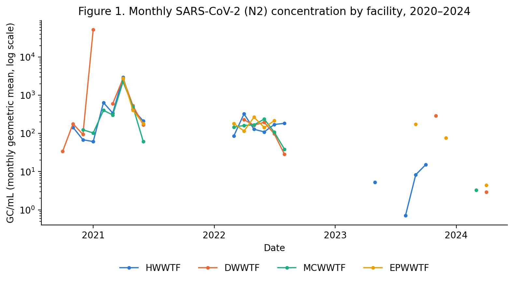
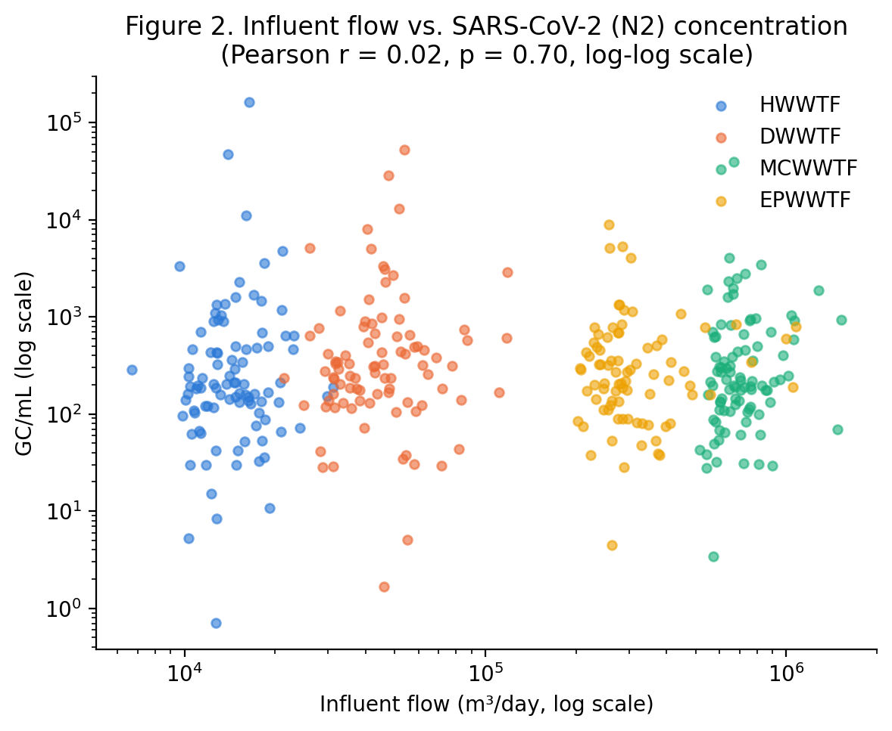
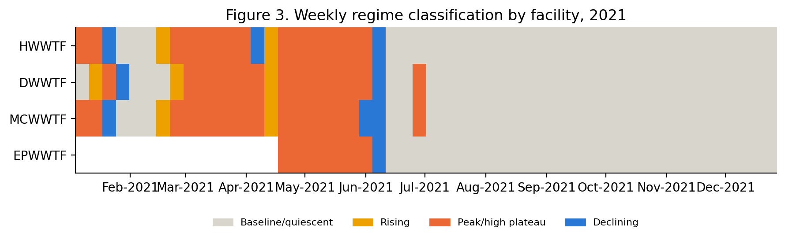

Internship research report · not peer-reviewed
Data-Driven Characterization of SARS-CoV-2 Wastewater Surveillance Dynamics Across Four Municipal Treatment Plants in Halifax, Nova Scotia
- 2,421 → 1,091raw records reduced to clean observations
- r = 0.02flow vs. viral concentration (p = 0.70)
- 94.6%of comparable weeks in sync across the four plants
- No gainover simple baselines when predicting concentration
Abstract
Wastewater-based surveillance for SARS-CoV-2 has been implemented across four municipal treatment facilities in Halifax, Nova Scotia, since 2020, generating a multi-year dataset used primarily for dashboard visualization. This study applied a reproducible preprocessing pipeline and two exploratory data science techniques to characterize concentration dynamics beyond simple trend reporting. Preprocessing addressed substantial duplication and unaggregated technical replicates in the raw sample records (2,421 reduced to 1,091 facility-date-gene observations) and resolved a previously unexamined discrepancy between two parallel concentration fields. Influent flow showed no measurable correlation with measured viral concentration (Pearson r = 0.02, p = 0.70), and k-means clustering of weekly concentration regimes found that the four facilities were synchronized in 94.6% of comparable weeks during the 2021 transmission wave, indicating that concentration dynamics were driven by a shared, citywide epidemiological process rather than facility-specific operational factors. A predictive model using flow and seasonal covariates, evaluated with a temporal train-test split, did not outperform simple baselines, a result consistent with the clustering and flow-correlation findings. These results suggest that existing wastewater surveillance infrastructure can support analyses beyond visualization, while also clarifying that epidemiological covariates, not currently collected alongside operational data, would likely be required to achieve predictive performance.
1. Introduction
Wastewater-based epidemiology (WBE) emerged as a critical public health surveillance tool during the COVID-19 pandemic (Medema et al., 2020). By quantifying viral RNA shed into municipal sewer systems, WBE programs enabled near real-time, population-level tracking of SARS-CoV-2 circulation, independent of clinical testing capacity or individual healthcare-seeking behavior. This provided an early-warning signal for outbreak onset, growth, and decline across entire sewersheds, complementing traditional case-based surveillance (Peccia et al., 2020).
Beyond its epidemiological value, wastewater treatment facility (WWTF) data represents a broader and largely underutilized resource for operational and public health decision-making. Municipal utilities routinely generate large volumes of water quality, flow, and pathogen surveillance data. However, this information is frequently used primarily for compliance reporting or basic visualization, rather than for deeper statistical or predictive analysis (Newhart et al., 2019).
This gap is particularly relevant to climate change resilience. Treatment facilities must increasingly rely on data-driven approaches to anticipate and respond to variable influent conditions — whether driven by weather events or, as in the case of pathogen surveillance, by epidemiological dynamics.
In Halifax, Nova Scotia, four municipal wastewater treatment facilities — Halifax (HWWTF), Dartmouth (DWWTF), Mill Cove (MCWWTF), and Eastern Passage (EPWWTF) — have participated in a SARS-CoV-2 wastewater surveillance program since 2020. This program has generated a multi-year dataset of influent and effluent viral RNA concentrations, alongside continuous flow monitoring. To date, the primary application of this dataset has been visualization through interactive dashboards, allowing stakeholders to track raw concentration trends over time. However, WWTF surveillance data has specific statistical characteristics that limit the interpretability of simple visual trends: autocorrelation and irregular sampling intervals (Newhart et al., 2019), as well as left-censoring below the analytical limit of detection (LOD) (van Boven et al., 2023). These characteristics are not addressed by standard descriptive reporting.
The objective of this study was to move beyond visualization and apply a broader set of statistical and machine learning techniques to characterize the spatiotemporal dynamics of SARS-CoV-2 concentrations across Halifax’s four-plant surveillance network. This involved three specific steps. (1) A reproducible data preprocessing pipeline was developed to address technical replicate aggregation, censoring below the limit of detection, and a data provenance inconsistency identified in the raw concentration records. (2) Unsupervised clustering classified weekly time periods into shared epidemiological regimes across facilities, complementing a descriptive assessment of the relationship between influent flow and measured concentration. (3) A temporally-validated machine learning approach evaluated whether viral concentration could be predicted from operational (flow) and seasonal covariates. Together, these analyses provide a methodological template for extracting operationally and epidemiologically meaningful signal from routinely collected wastewater surveillance data.
2. Materials and Methods
2.1 Study sites
This study used data from four municipal wastewater treatment facilities (WWTFs) serving the Halifax Regional Municipality, Nova Scotia, Canada: Halifax (HWWTF), Dartmouth (DWWTF), Mill Cove (MCWWTF), and Eastern Passage (EPWWTF). These facilities collectively serve the majority of the urban population of the Halifax metropolitan area, with distinct sewersheds and catchment populations.
2.2 Sample collection and viral quantification
Wastewater samples were collected as 24-hour composite influent samples at each facility and analyzed by reverse-transcription quantitative PCR (RT-qPCR) targeting two SARS-CoV-2 nucleocapsid gene regions, N1 and N2.
Concentrations were reported in genome copies per milliliter (GC/mL). Samples for which viral RNA was not quantifiable above the assay’s analytical limit of detection (LOD) were flagged as non-detects.
2.3 Data sources
Two primary data sources were used. The first was a sample-level tracking dataset (n = 2,421 records) spanning August 2020 to July 2024, containing facility, collection date, sample source (influent/effluent), target gene, measured concentration, and LOD status for each analyzed sample. The second was a set of daily average influent flow records (m³/h and m³/day) for each of the four facilities, with near-complete daily coverage over the same period.
2.4 Data preprocessing
Several data quality issues were identified and addressed prior to analysis, following inspection of the raw sample tracking dataset.
First, two inconsistent or unlabeled facility entries were removed, and 29 records with no specified target gene were excluded, retaining 2,390 records across the four facilities.
Second, the dataset contained two parallel concentration fields, GC/mL and GC/mL Original Data, which were expected to represent the same measurement but diverged substantially for samples collected before 2023 (0.2–12% row-level agreement in 2021–2022, rising to 100% agreement by 2024). Because GC/mL Original Data was the field directly and consistently linked to the reported LOD status (0 inconsistencies across all 2,390 records), it was adopted as the primary concentration variable for all subsequent analyses; discrepancies with the GC/mL field are noted as a data provenance limitation (Section 4).
Third, 931 exact duplicate rows (identical sample ID and reported value) were removed. The remaining dataset contained numerous technical replicates — repeated qPCR measurements of the same physical sample under the same sample ID, recorded as separate rows (n = 302 groups with differing replicate values). These were aggregated to a single value per facility-date-source-gene combination using the geometric mean of detected replicates, consistent with the log-normal distribution typical of environmental viral RNA concentrations. Groups in which some replicates were detected and others were non-detect (n = 75) were resolved by using the detected replicate value(s) only. Groups with no valid measurement across all replicates (n = 4) were excluded. This pipeline reduced the dataset from 2,421 raw records to 1,091 facility-date-source-gene observations.
Finally, viral load (genome copies per day) was calculated for detected samples by multiplying the aggregated concentration by the corresponding daily influent flow volume, converted to liters. Of the 1,091 cleaned records, 1,045 (96%) were successfully matched to a same-day flow record; the remaining 46 unmatched records, all from 2024, reflect a coverage gap where flow monitoring data ended before the final sample collection dates.
2.5 Analytical methods
All analyses were performed in Python (pandas, NumPy, SciPy, scikit-learn). Analyses focused on the N2 gene target and influent samples, as N2 represented 96% of all measurements and influent samples represented the majority of collected data.
Descriptive exploration. The relationship between influent flow and measured viral concentration was assessed using Pearson correlation on log10-transformed values, both across the full detected dataset and separately for each facility.
Weekly regime clustering. For the period of densest sampling (2021), daily concentration series were constructed for each facility by linear interpolation across gaps of 7 days or less, with non-detect values assigned a substitution value equal to half the minimum detected concentration in the full dataset. These daily series were summarized into weekly windows characterized by three features — mean level, linear slope, and within-week volatility. Features were standardized and clustered using k-means (k = 4) to identify shared temporal regimes (e.g., rising, peak, declining, baseline) across the surveillance network.
Predictive modeling. The feasibility of predicting viral concentration from operational and seasonal covariates was evaluated using two complementary models: a random forest classifier predicting detection status, and Ridge regression / random forest regressor models predicting log-transformed concentration magnitude among detected samples. Predictors included log-transformed daily flow, cyclical day-of-year encoding (sine/cosine), and facility identity. Models were trained on data collected before June 2022 and evaluated on data collected after that date, using a temporal (rather than random) train-test split to avoid information leakage.
3. Results
3.1 Data cleaning and quality summary
Of 2,421 raw sample records, 1,091 facility-date-source-gene observations remained after preprocessing (Table 1). The largest reduction came from aggregating exact duplicate rows and technical replicates (931 and 368 groups collapsed, respectively). The resulting dataset was balanced across facilities (DWWTF: 285; HWWTF: 280; MCWWTF: 277; EPWWTF: 249) and contained 451 detected and 640 non-detected observations.
Table 1. Data preprocessing pipeline summary.
| Step | Records remaining |
|---|---|
| Raw sample records | 2,421 |
| After facility/target-gene filtering | 2,390 |
| After removing exact duplicate rows | 1,459 |
| After aggregating technical replicates | 1,091 |

The isolated high value visible for DWWTF in January 2021 (Figure 1) reflects a single detected replicate surrounded by non-detect samples that month, rather than a sustained increase; this data point is revisited as a limitation in Section 4, as it may have influenced the weekly regime classification for that specific week in the clustering analysis (Section 3.3).
A substantial data provenance issue was identified during preprocessing: two parallel concentration fields (GC/mL and GC/mL Original Data) diverged for samples collected before 2023 (as low as 0.2% row-level agreement in 2021) but converged to 100% agreement by 2024. GC/mL Original Data was adopted as the primary concentration variable, as it was the field consistently linked to the reported LOD status across all records.
3.2 Relationship between flow and viral concentration
Across 362 detected influent samples with matched flow data, influent flow showed no meaningful correlation with measured viral concentration (Pearson r = 0.020, p = 0.70, log-log scale). This result held at the individual facility level (r ranging from 0.05 to 0.17, all non-significant, Table 2), suggesting that measured concentration in this dataset was not primarily driven by hydraulic dilution.
Table 2. Flow-concentration correlation by facility (log-log Pearson r).
| Facility | n | r | p-value |
|---|---|---|---|
| HWWTF | 96 | 0.112 | 0.277 |
| DWWTF | 91 | 0.053 | 0.617 |
| MCWWTF | 92 | 0.171 | 0.103 |
| EPWWTF | 83 | 0.051 | 0.650 |

3.3 Weekly regime clustering
K-means clustering of 193 facility-week observations identified four distinct regimes, distinguished primarily by slope and mean concentration level: a rising regime (n = 7 weeks, mean slope = +0.74 log10 units/week), a high plateau regime (n = 53, mean level = 2.69 log10 GC/mL), a declining regime (n = 9, mean slope = -0.39), and a low/quiescent baseline regime (n = 124, near-constant at the non-detect floor).
Among the 37 weeks for which all four facilities had sufficient data, 35 (94.6%) were assigned to the same regime across all four facilities simultaneously. This indicates a high degree of synchrony in epidemic dynamics across the four sewersheds during 2021, consistent with a shared, citywide transmission process rather than facility-specific dynamics.

3.4 Predictive modeling of viral concentration
An initial modeling attempt, using interpolated daily series with non-detects substituted at a fixed floor value, produced a naive persistence baseline with a perfect R² of 1.0 on the 2021-Q4 test period. Inspection revealed this was an artifact: the entire test window for at least one facility consisted of consecutive non-detects, all assigned the same substitution constant, making trivial persistence indistinguishable from a correct prediction. This was corrected by restricting the modeling exercise to genuinely detected measurements only, and reframing the task as two sub-problems: (1) classifying detection status, and (2) predicting concentration magnitude among detected samples.
Using a temporal train/test split (train: before June 2022; test: after), the detection classifier achieved 55.9% accuracy and an F1-score of 0.24, underperforming a majority-class baseline (65.2% accuracy). For the regression task among detected samples, both Ridge regression (R² = -0.29) and random forest (R² = -0.33) failed to achieve a positive R² on the held-out test period, indicating no genuine out-of-sample explanatory power. Both models nonetheless modestly outperformed a naive baseline that simply carried forward the training-period mean concentration (R² = -0.60 on test data), a gap that itself reflects the magnitude of distributional shift between the training and test periods. Feature importance in the random forest model was dominated by seasonal encoding (day-of-year sine/cosine terms, combined importance > 0.7) rather than flow or facility identity.
These results indicate that flow and calendar-based seasonality alone are insufficient to predict SARS-CoV-2 wastewater concentration outside the epidemic wave present in the training data, consistent with the interpretation in Section 3.3 that concentration dynamics are driven by a shared, external epidemiological process rather than by facility-level operational variables.
4. Discussion
This study applied a data cleaning pipeline and two exploratory/predictive analyses — regime clustering and concentration prediction — to four years of SARS-CoV-2 wastewater surveillance data from Halifax’s four municipal treatment facilities. Three main findings emerged.
First, the raw dataset required substantial preprocessing before it could support quantitative analysis. Nearly 60% of raw records were either exact duplicates or unaggregated technical replicates, and a previously unexamined discrepancy between two concentration fields (GC/mL and GC/mL Original Data) meant that the choice of which field to treat as ground truth materially affected downstream results. This highlights a general risk in reusing routinely collected surveillance data for secondary analysis: fields designed to report a single aggregated value per sample date are not necessarily structured to support statistical modeling, where the handling of replicates and censored values directly affects model validity.
Second, the absence of a flow-concentration relationship (Section 3.2) and the strong cross-facility synchrony identified through clustering (Section 3.3) point toward the same underlying conclusion: viral concentration dynamics in this system were driven primarily by a shared, citywide epidemiological process rather than by facility-specific operational or hydraulic factors. Practically, this suggests a degree of redundancy in the four-plant surveillance network during periods of synchronized transmission — the four sewersheds largely told the same story at the same time in 2021. This has a potential resource-allocation implication: sampling frequency or laboratory capacity could conceivably be prioritized differently across facilities during periods of confirmed synchrony, though this would need to be validated over multiple transmission waves and variants before being used operationally, since synchrony during a single, large 2021 wave does not guarantee synchrony during smaller or more localized transmission events.
Third, the predictive modeling exercise produced a negative but informative result. Neither detection status nor concentration magnitude could be predicted from flow and seasonal covariates alone, once the model was corrected to avoid the artifact introduced by non-detect substitution. This is consistent with the flow-concentration and clustering findings: if concentration is driven by external epidemiological dynamics not captured by flow or calendar features, a model without epidemiological covariates (such as clinical case counts or circulating variant) would be expected to fail out-of-sample, particularly when training and test periods span different phases of the pandemic. This is a useful negative result in that it clarifies what additional data would be required for a more predictive model, rather than simply reflecting an unsuitable modeling choice.
Limitations. Several limitations should be considered when interpreting these results. Sampling frequency dropped substantially after 2021, leaving multi-month gaps in 2022–2024 that were not analyzed in the clustering or flow-correlation exercises, which were restricted to the densest 2021 sampling period. An isolated high-concentration value at DWWTF in January 2021 (Figure 1), based on a single detected replicate surrounded by non-detects, illustrates a broader risk of low-density sampling periods: a single measurement can disproportionately influence a weekly aggregate or regime classification. The cause of the discrepancy between the two concentration fields could not be determined from the available data and is noted here as an open data provenance issue rather than a resolved one. Left-censored (non-detect) observations were handled using a fixed substitution value in the interpolated series used for clustering, a common but imperfect convention that can distort the magnitude, though not the general timing, of estimated regimes. Finally, the clustering analysis operates on only four facilities, which limits the statistical robustness of any facility-level comparison; the reported synchrony should be interpreted as a descriptive pattern rather than a formally tested hypothesis.
Future work. Extending this analysis to incorporate clinical case data or circulating variant information, where available, would help clarify whether the predictive gap identified here can be closed. More broadly, applying the same clustering approach to the sparser 2022–2024 period, ideally after addressing the sampling gaps, would test whether the strong synchrony observed in 2021 held during later, more localized phases of the pandemic.
5. Conclusion
This study applied a reproducible preprocessing pipeline to SARS-CoV-2 wastewater surveillance data from four Halifax-area treatment facilities and used it to characterize concentration dynamics beyond the dashboard-level visualization for which the data was originally collected. Clustering of weekly concentration regimes showed that the four facilities were synchronized during the 2021 transmission wave in 94.6% of comparable weeks, while flow showed no measurable relationship with concentration — jointly indicating that surveillance dynamics were driven by shared epidemiological processes rather than facility-specific operational factors. A predictive modeling exercise using flow and seasonal covariates failed to outperform simple baselines out-of-sample, a result consistent with, rather than contradictory to, the clustering and correlation findings. Together, these results demonstrate that applying standard data science techniques to existing wastewater surveillance infrastructure can surface both actionable patterns (cross-facility synchrony) and clearly scoped gaps (the need for epidemiological covariates) that are not visible from raw trend visualization alone.
References
Medema, G., Heijnen, L., Elsinga, G., Italiaander, R., & Brouwer, A. (2020). Presence of SARS-Coronavirus-2 RNA in sewage and correlation with reported COVID-19 prevalence in the early stage of the epidemic in the Netherlands. Environmental Science & Technology Letters, 7(7), 511–516.
Newhart, K. B., Holloway, R. W., Hering, A. S., & Cath, T. Y. (2019). Data-driven performance analyses of wastewater treatment plants: A review. Water Research, 157, 498–513.
Peccia, J., Zulli, A., Brackney, D. E., Grubaugh, N. D., Kaplan, E. H., Casanovas-Massana, A., et al. (2020). Measurement of SARS-CoV-2 RNA in wastewater tracks community infection dynamics. Nature Biotechnology, 38, 1164–1167.
van Boven, M., Hetebrij, W. A., Swart, A., Nagelkerke, E., van der Beek, R. F. H. J., Stouten, S., Hoogeveen, R. T., Miura, F., Kloosterman, A., van der Drift, A. R., Welling, A., Lodder, W. J., & de Roda Husman, A. M. (2023). Patterns of SARS-CoV-2 circulation revealed by a nationwide sewage surveillance programme, the Netherlands, August 2020 to February 2022. Eurosurveillance, 28(25), 2200700.